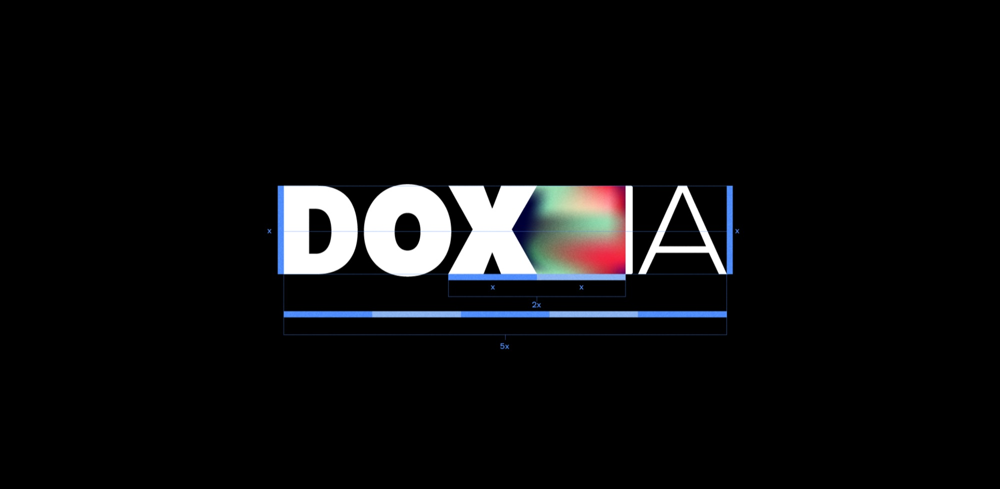
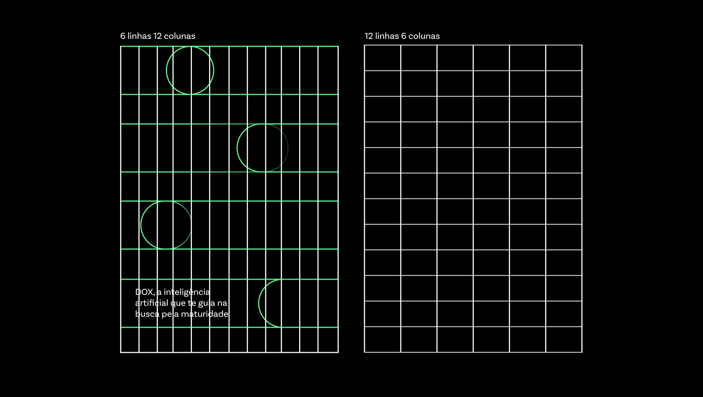
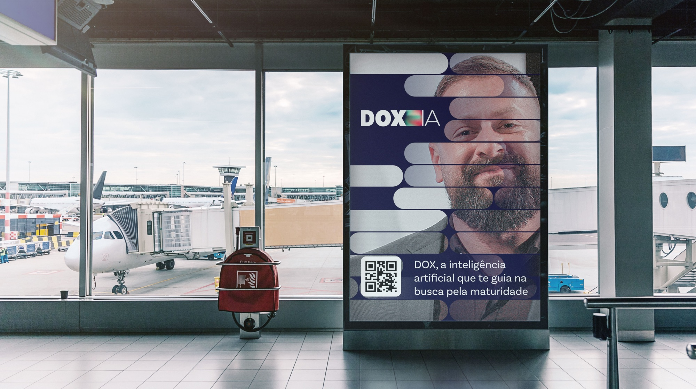
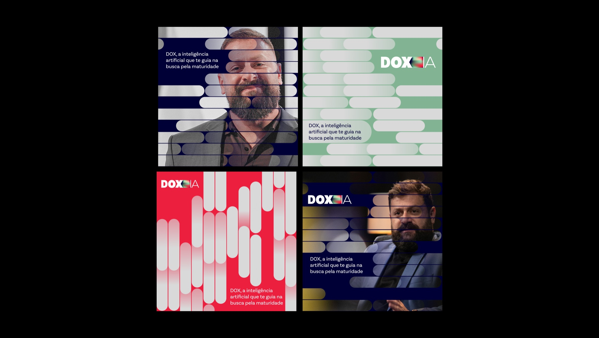
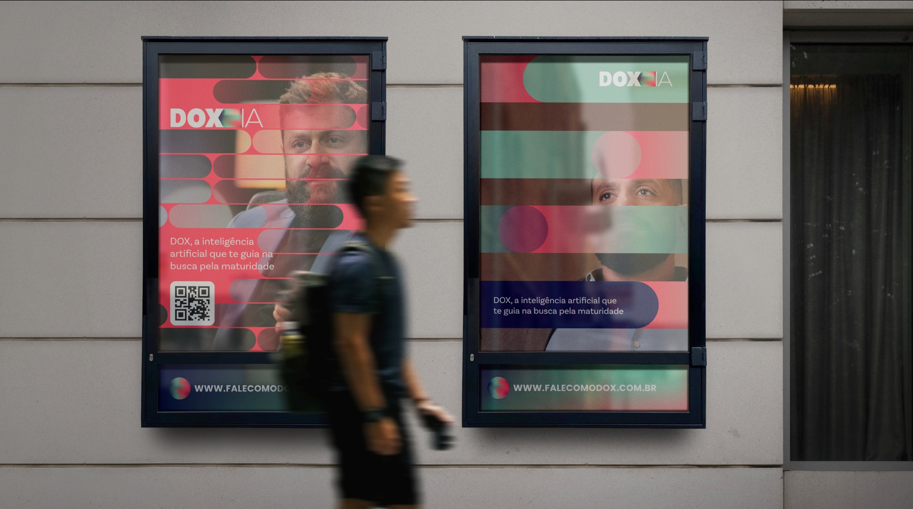
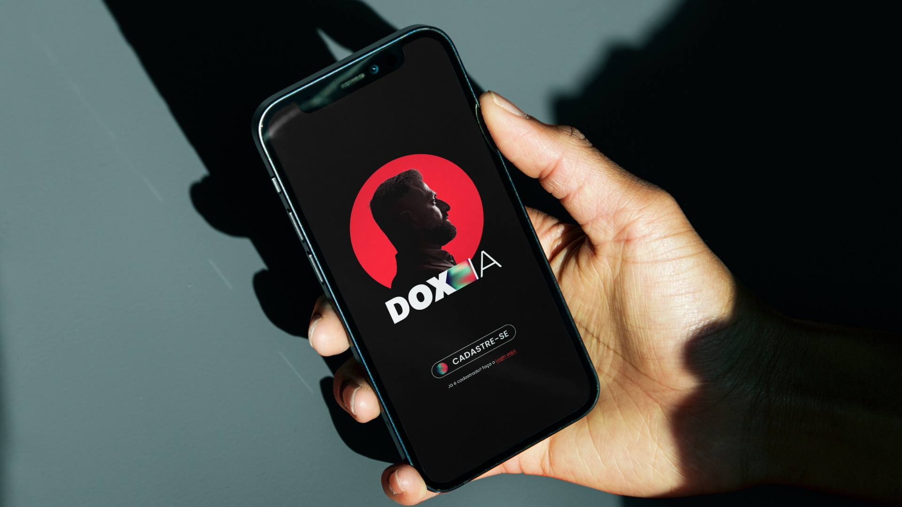
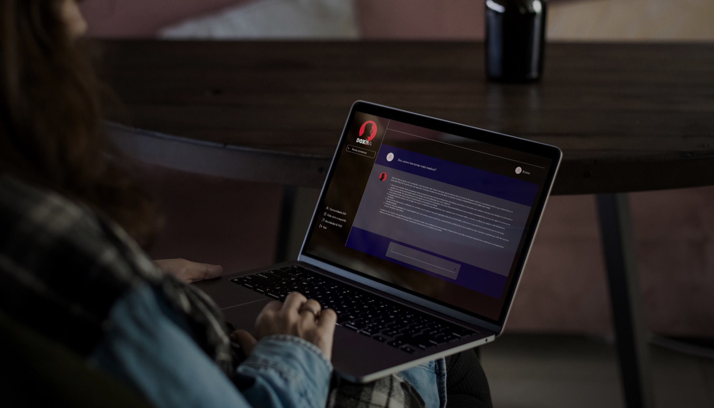

Dox IA
DOX is a conversational AI created for Dr. Italo Marsili, a leading Brazilian psychiatrist. It turns his work on maturity and mental health into a guide anyone can talk to. The brand had to feel human and trustworthy — never cold or clinical. So we built an identity that carries his authority while staying warm and close.

// Project Goals
Translate Dr. Italo Marsili's expertise into a trustworthy, human AI experience. Build a flexible identity that holds up across app, product, and out-of-home.







// The Result
A complete visual identity — logo, color, grid, and applications from app screens to billboards — that gives DOX a confident, human presence. The system carries the doctor's authority into a digital product, making the AI feel personal and approachable while staying true to its purpose: guiding people toward maturity and better mental health.